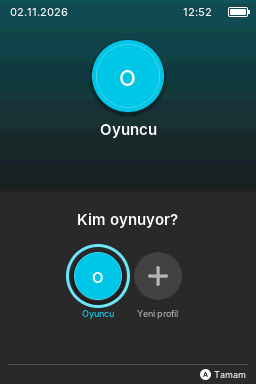
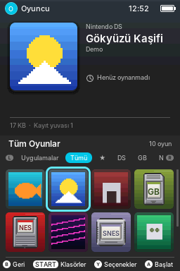
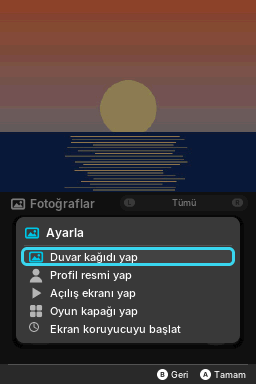
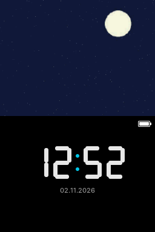
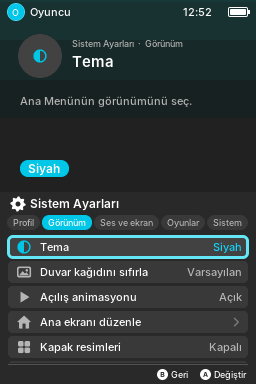
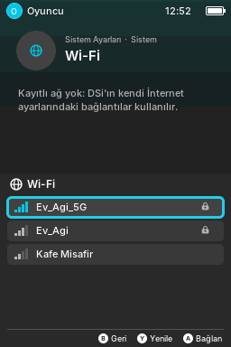
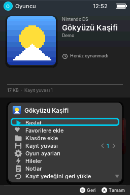
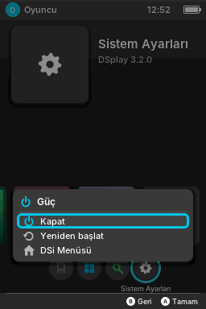

Switch'ten esinlenmiş hızlı ve sade bir menü. DS oyunları, DSiWare ve eski konsol oyunları tek yerde. Kartı bilgisayardaki DSplay Studio birkaç tıkla hazırlar.
A fast, clean menu inspired by the Switch. DS games, DSiWare and retro games in one place, and DSplay Studio sets up the card in a few clicks.
Ekran görüntüleri DSplay'in kendi simülatöründen; oyunlar ve fotoğraflar örnek. Büyütmek için dokun.
Screenshots come from DSplay's own simulator; the games and photos are samples. Tap to enlarge.








DSi, Wi-Fi üzerinden bilgisayara kumanda olur; düzenini Studio'da çiz.
The DSi becomes a controller for your computer over Wi-Fi; draw its layout in Studio.
Ücretsiz homebrew oyunlar ve araçlar, Wi-Fi ile konsola.
Free homebrew games and tools, sent to the console over Wi-Fi.
Aynı ağdaki DSplay'ler profil kartı ve fotoğraf paylaşır.
DSplay consoles on the same network swap profile cards and photos.
DSplay'in kendi sesleri; klasik paket ya da kendi WAV'ların Studio'dan.
DSplay's own sounds; a classic pack or your own WAV files via Studio.
Parmağınla ya da fareyle sürükle, büyütmek için dokun.
Drag with your finger or mouse, tap to enlarge.
Tarayıcıda açılan kurulum aracı. Python 3.8+ dışında bir şey gerektirmez; Windows, macOS ve Linux'ta çalışır.
The setup tool that opens in your browser. Needs nothing but Python 3.8+; runs on Windows, macOS and Linux.
DSplay, nds-bootstrap ve emülatörler; önceki menü yedeklenir.
DSplay, nds-bootstrap and emulators; the previous menu is backed up.
Sürükle bırak; kutu resimleri inip konsol için paketlenir.
Drag and drop; box art is downloaded and packed for the console.
Profil resmi, duvar kağıdı, kendi açılış ekranın ve sesin.
Profile pictures, wallpapers, your own boot screen and sound.
Tüm kayıtları ya da kartın tamamını yedekle, geri yükle.
Back up all saves or the whole card, and restore them.
Bir klasör seç; fotoğraflar küçültülüp albüm olarak karta gider.
Pick a folder; photos are resized and copied as an album.
Kartı çıkarmadan oyun ve dosya gönder.
Send games and files without removing the card.
Pakette oyun yoktur; yalnızca sahip olduğun oyunların yedeklerini kullan.
No games are included; only use backups of games you own.
Unlaunch kurulu bir DSi ve FAT32 biçimli bir SD kart yeterli.
All you need is a DSi with Unlaunch and a FAT32 SD card.
DSplay Studio (Windows).bat, macOS'ta DSplay Studio.command, Linux'ta ./dsplay_studio.shStart Studio. DSplay Studio (Windows).bat on Windows, DSplay Studio.command on macOS, ./dsplay_studio.sh on Linuxsd:/BOOT.NDS, SAVE & EXIT. Artık her açılışta DSplay gelir.Set up Unlaunch. Hold A + B while switching on: OPTIONS → NO BUTTON → sd:/BOOT.NDS, SAVE & EXIT. DSplay now starts every time.devkitPro, libnds2 ve calico ile yazıldı. DSplay kendi ARM7 programını taşır: POWER tuşu, kapatma, ses / parlaklık göstergesi ve oyundan dönüş ondan.
Written with devkitPro, libnds2 and calico. DSplay carries its own ARM7 program for the POWER button, turning off, the volume / brightness indicator and returning from games.
Ücretsiz. Kayıtlarına dokunmaz. İstediğin an eski menüne dönebilirsin.
Free. Leaves your saves alone. Go back to your old menu any time.